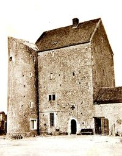

Recensement Jean-Claude Truffet
| Département | 45 — Loiret |
| Canton | Malesherbes |
| Commune | Sermaises |
| Type d'édifice | Forteresse |
| Période d'origine | XII-XV |

ENZANVILLE, dépendent les hameaux dEnzanville, Dreville, et Mesrobers, reconnaît pour seigneur, lAbbé de Sainte-Colombe lés Sens, qui a justice haute, moyenne, et basse, dans toute létendue de ladite paroisse. Lors que la Coûtume dEstampes qui fut reformée en lan 1556, il y eut "grande contestation entre les substituts du procureur Général du Roy, aux bailliages dOrléans, et dEstampes, chacun deux prétendant que les appels de celui de Sermaises devrait être portez à son ressort ; mais ils ne furent pas écoutez, parce quils vont directement à la cour du parlement, par privilège du Roy Charles VI." Protection pour la ville royale dÉtampes, le château d'Enzanville servira également à collecter limpôt et à étendre l'influence de l'abbaye de Saint-Pierre-le-Vif de Sens. Propriété de Jean de Lubin, 1er grand fauconnier de France du Roi en 1428, seigneur dEnzanville. Enzanville est régi par les coutumes dÉtampes en 1556. Propriété de la famille De Vidal du XVIIe au XVIIIe siècles. Le château donnera son surnom d'Enzanville à Guy-Victor de Vidal (1692-1720). Propriété d'André de Vidal (1643-1708), gendarme de la garde du Roi, décrit comme chevalier, seigneur d'Ezerville, Enzanville et autres lieux en 1688. Le 28 décembre 1715, Charles-André de Vidal (1684-1741) fait foi et hommage à la baronnie de Serinade pour la tour d'Enzanville. Propriété de Charles-Louis de Vidal, chevalier, seigneur d'Eserville et d'Enzanville (1716-1755), élevé page à la grande écurie du Roi.
ENZANVILLE suite, Charles-Louis de Vidal n'ayant que des filles, c'est son jeune frère Charles-Alexandre de Vidal (1735-), lieutenant dans le régiment Royal-Lorraine, qui reprend le titre et apparait comme chevalier de Chaumont et Puissant seigneur d'Anzanville des grands châtellier de Villarseau et autres lieux en 1774. Au moment des États généraux du 9 mars 1789, le château appartient à M. de Vidal de Lion, chevalier de l'Ordre royal et militaire de Saint-Louis. De Vidal de Lion est présent dans le procès-verbal de l'Assemblée générale des Trois Ordres pour le bailliage d'Étampes. Construit au XIIe et XIIIe siècles, le château se composait à l'origine d'une base carrée à laquelle étaient adossées deux tours. L'une des deux tours a aujourd'hui disparu. Sans ouverture au rez-de-chaussée à l'origine, une porte et une cheminée seront ajoutées au XVe siècle. En 1896 : « De Sermaises nous nous dirigeons vers Blandy ; à mi chemin, nous apercevons une construction massive, une sorte de donjon carré, flanqué de deux tours rondes, percées de quelques minuscules ouvertures et obliquement découronnées comme celles du château de la Chasse, dans la forêt de Montmorency. Ceci appartient au village d'Anzanville que nous traversons bientôt ; c'était une petite forteresse autrefois, c'est une grande ferme aujourd'hui ; dans les environs du pays on l'appelle la Tour.
Enzanville; de Jean de Lubin
"
A Sermaises le château d'Enzanville